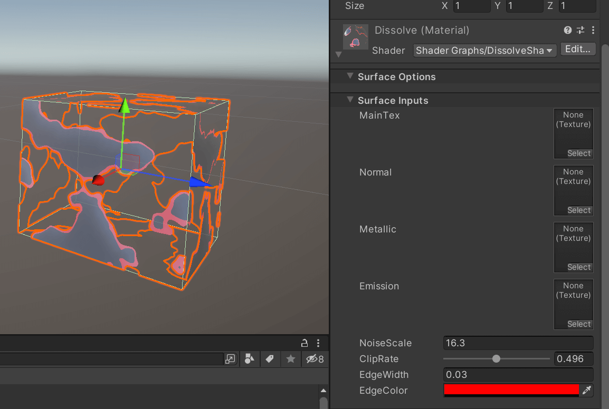
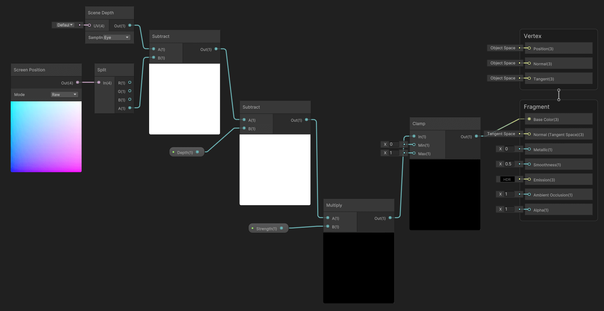

资源
课程
最简明的图形渲染流程解说——别被图形学吓到，入门
图形渲染流程：
几何阶段
-
模型
-
模型顶点 坐标
-
模型矩阵
-
-
世界（游戏场景）
- 世界空间坐标
- 模型空间到世界空间的转换过程：世界空间坐标 顶点坐标
- 世界空间坐标
-
相机
- 观察矩阵
- 观察空间坐标
- 世界空间到观察空间的转换过程：观察空间坐标 顶点坐标
-
投影
- 投影矩阵
- 投影坐标
- 观察空间到投影的转换过程：投影坐标 顶点坐标
由于矩阵乘法满足结合律，因此我们将引入的三个矩阵结合称为 矩阵。（ 矩阵乘以坐标，就完成了坐标的完整变化，这个过程被称为几何阶段）
要对顶点坐标做额外的处理，称之为顶点着色器 Vertex Shader。
光栅化
几何阶段结束后，还需要进行光栅化，才可以一个个像素点地显示。
在光栅化阶段，计算机需要知道这些屏幕像素需要涂上什么样的颜色，是片元着色器 Fragment Shader 需要完成的工作。
通用着色器又叫顶点-片元着色器，因此两种着色器加起来才是完整的 Shader。
01. 第一个光照 shader
URP / HDRP 支持 ShaderGraph。
-
Lit Shader Graph，光照模板，相当于以前的 PBR 节点。
-
Unlit Shader Graph，无光照模板
新建一个 Lit Shader Graph，打开之。
-
左边的面板可以控制最终显示在 Material 面板上的参数。
-
中间的节点控制 Shader 逻辑。
-
右边的 Graph Inspector 用于设置节点属性（Node Settings）和全局属性（Graph）。
课程的示例 Shader Graph。
- MainTex 是可设置的 Texture2D 类。
- Sample Texture 2D 节点将 Texture 坐标转成 RGBA 颜色信息输出。
- MainColor 是可设置的 Color 类。
- Multiply 节点将两种颜色 A 和 B 相乘成一种颜色 Out 输出。
- ColorTemp 和 ColorTint 都是可设置的 Float 数，在 Node Settings 以 Slider 形式，范围在 0 到 1 之间。
- ColorTemp 色温越小越蓝，越大越黄。
- ColorTint 色调越小越绿，越大越粉。
- White Balance 节点用于白平衡处理。
- 最后将输出的颜色应用在 Fragment 的 BaseColor 上。
在 GameObject 上的效果：
01-1 光照补充与 SubGraph
新建一个 Shader Graph，绑定 Material，再绑定到模型上。
一阵操作 Shader Graph，使得 Shader Graph 可以支持：
- MainTex 贴图
- Normal 法线贴图
- Matallic 金属度贴图
- Smoothness 光滑度
- Emission 自发光贴图
- EmissionOn 控制自发光是否打开
- EmissionColor 自发光颜色
- AO 环境光屏蔽贴图
选中这些节点，右键 Covert To Sub Graph。
这些节点就以一个 SubGraph 的形式展示。
02. 轮廓光/边缘光
根据原模型提供的漫反射贴图 MainTex、法线贴图 NormalTex、金属度贴图 MetalTex、自发光贴图 EmissionTex 创建 Shader Graph 节点。
创建轮廓光效果：
- Fresnel Effect 节点，创建轮廓光
- RimPower，Float 属性，控制轮廓光强度，值越接近 0，轮廓光越发散
- RimColor，Color 属性，控制轮廓光颜色
- Multiply 节点，将 Fresnel Effect 节点输出的颜色值和 RimColor 相乘，获得带颜色的轮廓光
- Add 节点，将轮廓光与轮廓光贴图相结合
- 为什么要用 Add 而不是 Multiply？因为轮廓光贴图几乎全黑，使用 Multiply 会导致最后输出也几乎全黑
最终效果。
03. 溶解
溶解效果需要在 Graph Inspector 里打开 Alpha Cliping。
-
Simple Noise 节点控制溶解形态，连接至 Alpha。
-
Noise Scale 控制溶解图案大小。
-
ClipRate 控制 Alpha Clip Threshold，Alpha 值低于 ClipRate 的点将不会被渲染。
添加溶解自发光边缘。
- EdgeWidth 控制边缘宽度。
- ClipRate 和 EdgeWitdh 经过 Add 节点叠加，输出值和 Simple Noise 的输出作为 Step 节点的输入，得到一张二值化图。
- 二值化图和 EdgeColor 节点作为 Multiply 节点的输入，给溶解边缘染色，最后连上 Emission。

演示效果。
如果要利用模型自带的 Emission 贴图，还要再整个 Add 节点，最后再连 Emission 节点。
可以使用代码控制 ClipRate 的值来控制消融状态。
如果要让物体自动消融，则可以使用 Time 节点连着 Remap 替换 ClipRate 来让物体自动消融。
04. 水面（上）
-
水面是透明的，Surface Type 设成 Transparent。
-
水面没有阴影，关闭 Cast Shadows。
检测与岸边的相交边缘，不透明的物体与半透明的物体之间的边缘检测，需要依靠屏幕深度来完成，打开它。
场景深度节点深度（Scene Depth，Sampling 为 Eye，包含透明像素）减去屏幕空间的 向量（Screen Position，Mode 为 Raw，不包含透明像素）就是不透明物体与半透明物体相交的边缘。
预览结果。靠近水面边缘的地方呈现黑色，表明场景深度有效。

-
增加一个 Depth，控制深浅强度。
-
Strength 连 Multiply 调整修改力度。
- Clamp 将值钳制在 0 到 1 之间。
- ShallowColor 和 Deep Color 控制水波颜色。
浏览效果，此时水已经被染色。
Lerp 分理出 Alpha 通道，以显示水的透明效果。
设定好 ShallowColor 和 Deep Color 的 Alpha 值才有效。
浏览效果，此时水呈现透明色。
给水增加法线贴图。
共有两种法线：
- FirstNormal
- SecondNormal
SampleTexture2D 的 Type 记得选 Normal。两个法线贴图用 Add 节点相加。
- Tiling And Offset 控制法线贴图的缩放和平移。
- Normal Strength 调整法线强度，最后连片元着色器的 Normal。
浏览效果。可以正确渲染法线了。
将 NormalStrength 与 边缘信息再进行 Lerp 运算，使得法线贴图考虑边缘信息。
给法线贴图的 Tiling And Offset 用 Time 控制，以达到水波流动的动态效果。
在 Scene 里打开 Always Refresh，便可浏览到水流实时流动的效果。
接下来修改顶点着色器，只需要修改模型的 Y 坐标即可。
用 Gradient Noise 给模型的 Y 坐标做一个扰动，后面用 Time、Multiply、Tiling And Offset 控制扰动属性。
浏览效果，此时物体发生了形变。
增加 Displacement 控制扰动强度。
预览结果。通过修改 Displacement 的值以修改扰动强度。
05. 水面（下）
为了给水面增加波光粼粼的效果，使用一个 Float 类型，范围 的 Smoothness 来控制片元着色器的 Smoothness。
给水面增加物体折射扭曲的效果，需要操作场景像素点的颜色 Scene Color，渲染器设置的 Opaque Texture 需要打开。
增加 Gradient Noise，Normal From Weight 将其转成法线贴图来调整 Scene Color，最后与之前渲染的颜色作一个 Lerp，输出到片元着色器的 Base Color。
RefractionStrength 可以调整折射的强度。
预览效果。
使用 Time 操作 Gradient Noise 的 Tiling And Offset 让折射效果随时间而变化。
RefractionSpeed 和 RefractionScale 分别控制折射效果的改变速度和扭曲大小。
最终 Shader Graph 如上图所示。
06. 积雪
使用之前 pbr Sub Graph 创建一个基本的 Shader Graph 模板。
通过物体表面法线方向 Normal Vector 与世界空间的夹角来判断这个表面是否应该要有积雪。
- SnowDirection 雪的方向，作一个 Normalize 归一化。
- DotProduction，计算物体表面法线方向和雪的法线之间的夹角。
- Remap，将 的范围映射到 。
- SnowDepth，控制雪的深度。
- OneMinus，输出值 = 1 - 输出值，让 SnowDepth 符合值越大深度越深的效果。
- Step，阈值处理。
- 与之前的 Emission 做相加，最后的 Emission 即为所求。

预览效果。
07. 自定义光照
漫反射:
兰伯特光照模型：
- 是光照强度。
- 为入射光线的反向量。
- 为当前表面的法向量方向。
这么放置节点。
MainLight 是一个自定义函数类，设置好它的 Outputs：
- Color 漫反射颜色
- Direction 漫反射方向
1 | |
漫反射预览效果。
1 | |
这个 HLSL 文件中定义了两个函数，
MainLight_half和DirectSpecular_half。这两个函数分别用于计算主光源的信息和直接镜面反射的信息。
MainLight_half函数接收一个世界坐标位置（WorldPos）作为输入，输出主光源的方向（Direction）、颜色（Color）、距离衰减（DistanceAtten）和阴影衰减（ShadowAtten）。函数中首先判断是否在 ShaderGraph 预览模式下，如果是则直接赋值，否则根据是否使用屏幕空间阴影来计算阴影坐标（shadowCoord），然后根据阴影坐标获取主光源信息。
DirectSpecular_half函数接收镜面反射系数（Specular）、光滑度（Smoothness）、方向（Direction）、颜色（Color）、世界法线（WorldNormal）和世界视线（WorldView）作为输入，输出镜面反射的颜色（Out）。函数中首先判断是否在 ShaderGraph 预览模式下，如果是则直接赋值，否则对输入参数进行处理（例如计算光滑度，规范化法线和视线等），然后调用LightingSpecular函数计算镜面反射的颜色。这两个函数主要用于在 Unity 的 Shader 中计算光照和反射，以实现更真实的渲染效果。
把上面这些代码放在一个 hlsl 文件中。

MainLight_half 函数，精度为 Half，读取 Postion 作为世界坐标，输出：
- 主光源的方向 Direction
- 颜色 Color
- 距离衰减 DistanceAtten
- 阴影衰减 ShadowAtten
镜面反射：光照强度是光源向量与顶点法线的反射向量的点积。
DirectSpecular_half 函数，精度为 Half。
输入：
- 镜面反射系数 Specular
- 光滑度 Smoothness
- 方向 Direction
- 颜色 Color
- 世界法线 WorldNormal
- 世界视线 WorldView
输出：
- 镜面反射的颜色 Out
- 镜面反射系数 Specular
- 光滑度 Smoothness
- 方向 Direction
- 颜色 Color
由物体给出；
- 世界法线 WorldNormal
- 世界视线 WorldView
从游戏世界中获取。
emmmm 乱七八糟的节点。
最终效果。
08. 四方线框
教程里的四方线框对模型的 UV 贴图有要求，Blender 新建一个立方体模型，做细分，添加一个 UVMaps 并重置，导出至 Unity。
使用 Alpha Clip 隐去非边框的像素来实现四方线框的效果。

预览效果。
制作 U 另一方向。
预览效果。
同理，制作 V 方向的效果。
预览效果。
增加 Emission 颜色，颜色模式设为 HDR。
预览效果。
如果需要辉光效果，在 Camera 里打开 Post Processing。
Volume 调整 Bloom 的 Tint 和 Intensity。
制作线框消失的效果，将顶点低于 Threshold 的隐去。
预览效果。
用 Time 代替 Threshold，由于 Time 是一个随时间不断增加的数，对其进行 Modulo 求余就可以实现周期一样的效果。
09. Shader 帧动画
使用 Shader Graph 来实现用一张 UV 贴图的帧动画。
使用 Tiling And Offset 将 UV 贴图裁切。
一阵数学运算使得可以根据坐标来裁切 UV 贴图。
使用 Time 使得自动播放 UV 动画。
全家福。